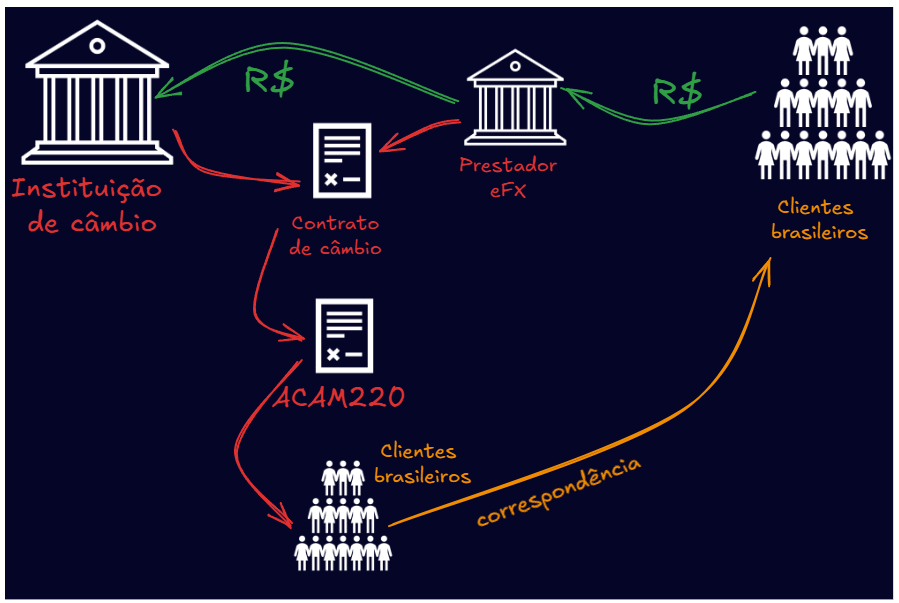

O afastamento do sigilo cambial nada mais é do que uma espécie de afasta mento de sigilo financeiro. Todos os fundamentos tratados no item sobre a quebra bancária se aplicam à quebra de sigilo de operações de câmbio.
Aliás, mesmo que não tenha havido, no início, a inclusão da quebra de sigilo cambial no pedido judicial deferido, informações, dados e documentos destas operações podem ser requisitados diretamente das instituições financeiras para as quais foram direcionadas as ordens de afastamento de sigilo contido no extrato do Sisbajud, eis que o modelo de representação constante do Simba contém um pedido complementar com uma cláusula genérica com o seguinte texto:
“Que seja autorizado a esta autoridade policial e a peritos
criminais designados para atuar no caso, requisitar diretamente
às instituições financeiras, dados e documentos de suporte das
operações financeiras realizadas no período de afastamento do
sigilo, bem como aqueles relacionados a cadastros dos clientes
e análises de crédito feito nas próprias instituições pela área
de compliance ou de controles internos.”
Para citar um exemplo, basta imaginar o caso em que a análise da quebra bancária revela inúmeras operações cambiais. Os dados do sigilo bancário afastado por meio do Simba podem demonstrar movimentações financeiras (ori gem/destino) vinculadas a operações de câmbio. Isso ocorre quando os extratos bancários mostram movimentações com código de lançamento “108” no campo “tipo_lançamento” ou descrição da atividade com a expressão “câmbio” no campo “lancamento_descricao”. Nesta ocasião, se for oportuno, basta requisitar os dados diretamente à instituição financeira que opera o câmbio.
Além disso, caso os relatórios do Simba demonstrem transferências (crédito ou débito) cujo campo de origem/destino apontem para uma instituição que opere câmbio, como corretoras de câmbio, é grande a possibilidade de que exista uma operação de câmbio operada pela instituição de origem/destino. Da mesma forma, basta requisitar os dados em questão.
Ainda, na representação modelo consta um pedido complementar para as instituições financeiras encaminharem a documentação suporte das operações de câmbio, isto é, além dos contratos de câmbio, eventuais documentos que originaram a operação (Declarações de Importação, Registros de Exportação, Conhecimento de Transporte, Financiamento de exportações etc.). Caso seja necessário, tais documentos podem ser requisitados diretamente após o afasta mento do sigilo.
Entretanto, se no momento da formulação do pedido de quebra de sigilo bancário já existe a necessidade de analisar as operações de câmbio, é possível obter os dados de todas as operações cambiais realizadas pelas pessoas sujeitas à investigação, de forma estruturada, diretamente do Banco Central do Brasil.
A representação que serve de modelo constante do Simba também tem um pedido complementar para tanto, conforme segue:
“Que sejam fornecidos pelo Banco Central do Brasil, em meio
eletrônico, planilha eletrônica e dados tabulados, todos os
registros existentes de remessas e recebimentos de recursos
internacionais e de operações de câmbio, bem como outros
registros de manutenção de recursos no exterior, relacionados
aos investigados.”
Conhecido que o afastamento do sigilo cambial é possível, o mais importante é compreender quando as operações de câmbio serão importantes para a inves tigação, seja antes da quebra, ou com a análise dos dados do sigilo bancário já afastado.
Para isso, imprescindível conhecer alguns aspectos do mercado de câmbio.
O mercado de câmbio é um segmento do Sistema Financeiro Nacional que trata das operações de câmbio, tanto para negociar moeda estrangeira em espécie, quanto para transferir divisas internacionalmente ou arbitrar a compra e venda de moeda estrangeira, tudo sob a supervisão do Banco Central do Brasil.
Neste contexto, a quebra do sigilo cambial estará atrelada, especialmente, a três categorias de investigações:
As relativas aos crimes cambiais propriamente ditos: instituição financeira sem autorização (art. 16-Lei 7.492/86), fraude cambial (art. 21-Lei 7.492/86) e evasão de divisas (art. 22-Lei 7.492/86);
As que se dedicam a apurar gestão fraudulenta ou temerária (art. 4º-Lei 7.492/86) de instituições financeiras que atuam no mercado de câmbio, além das fraudes nos serviços de eFX;
A investigação patrimonial em sentido estrito ou a que resulta na investigação de lavagem de dinheiro, baseadas na expressão “siga o dinheiro”.
Desnecessário neste módulo aprofundar as hipóteses criminais próprias dos crimes financeiros e de ocultação ou dissimulação de bens, direitos ou valores provenientes de infrações penais. Entretanto, é fundamental ter a exata com preensão do que se pretende investigar, das possíveis diligências e dos dados disponíveis para consulta.
Quanto aos dados cambiais, o Banco Central do Brasil exige que todas as operações sejam registradas no Sistema Câmbio, sejam aquelas decorrentes do mercado primário (entre instituições e seus clientes) ou do mercado secundário (interbancário).
Portanto, a quebra cambial do Sistema Câmbio do BCB é uma fonte primor dial e estruturada dos registros das operações de câmbio no país. Compreender como os dados estão estruturados coloca o investigador em outro patamar de conhecimento.
Os dados que interessam à Polícia Federal, decorrentes do sistema câmbio no mercado primário, são transmitidos ao BCB pelas instituições autorizadas a operar no mercado, basicamente por meio de dois arquivos, o CAM0021 e o ACAM204. Atualmente, o Banco Central do Brasil exige que informações mínimas sobre as operações cambiais sejam prestadas por meio do sistema câmbio, conforme o Anexo I da Resolução nº 277, de 31 de dezembro de 2022, a saber: I - Identificação da instituição autorizada a operar no mercado de câmbio e, se houver, da instituição intermediadora, devendo ser informados para o cliente os nomes e os números de inscrição no Cadastro Nacional da Pessoa Jurídica (CNPJ) das instituições; II - Identificação do cliente, observada a Circular nº 3.978, de 23 de janeiro de 2020 (sobre PLD/FTP); III - número da operação de câmbio no Sistema Câmbio; IV - Data do evento e se o evento se refere a contratação, a alteração ou a cancelamento; V - Informação sobre se a operação de câmbio é de compra ou de venda de moeda estrangeira; VI - Moeda estrangeira; VII - valor em moeda estrangeira; VIII - taxa de câmbio; IX - Valor em reais; X - Valor Efetivo Total (VET), quando exigido; XI - forma de entrega da moeda estrangeira; XII - data prevista para liquidação; XIII - finalidade da operação; XIV - pagador ou recebedor no exterior, quando exigido; XV - Nome e país do pagador ou do recebedor no exterior, se houver; XVI - relação de vínculo entre o cliente e o pagador ou o recebedor no exterior, quando exigido; XVII - percentual de adiantamento sobre a operação de câmbio, se houver; XVIII - número do código de capitais estrangeiros, se houver; XIX - instruções de recebimento ou de pagamento, se houver; XX - Outras informações que o Banco Central do Brasil requisitar.
Além disso, interessam à PF os dados das operações relativas aos serviços de eFX.
O eFX, conforme regulamentação do Banco Central do Brasil, é um modelo de operação de câmbio eletrônico voltado à realização de pagamentos e trans ferências internacionais de forma simplificada, segura e integrada a plataformas digitais. Ele representa uma evolução nas operações de câmbio tradicionais, permitindo que instituições financeiras e empresas autorizadas realizem transações em moeda estrangeira com maior agilidade e menor burocracia.
Exemplos de empresas que operam eFX:
Essas operações podem envolver a compra de bens e serviços, transferências entre contas de mesma titularidade no Brasil e no exterior, ou ainda remessas para terceiros sem contrapartida, desde que respeitado o limite de até US$ 10.000,00 por transação. O eFX também contempla saques em moeda estrangeira, tanto no Brasil quanto fora do país. A principal característica desse modelo é a integração com sistemas eletrônicos e plataformas de pagamento, como o Pix, facilitando a execução em tempo real e com rastreabilidade.
A regulamentação do eFX está distribuída em diversas normas, como a Resolução BCB nº 137, que trata dos requisitos operacionais e tecnológicos das instituições participantes, e a Resolução BCB nº 148, que define critérios de compliance e transparência. Além disso, normas como a Resolução CMN nº 4942 e a Circular nº 3691 abordam aspectos de auditoria, certificação de sistemas e controle de riscos. A Resolução BCB nº 277, por sua vez, estabelece parâmetros gerais de operações abrangidas e instituições autorizadas a prestar serviços eFX.
Todas essas diretrizes visam garantir a segurança, a integridade e a confor midade das operações realizadas sob o modelo eFX.
Esse sistema é especialmente útil para empresas de comércio eletrônico, fintechs e plataformas de pagamento que atuam como intermediárias na coleta de recursos em reais e na conversão para moeda estrangeira. A operação deve ser registrada no Sistema Câmbio do Banco Central, em nome da empresa prestadora do serviço eFX, assegurando a legalidade e a rastreabilidade das transações. O eFX, portanto, representa um avanço na modernização do mercado de câmbio brasileiro, alinhando-se às tendências globais de digitalização financeira.
O arquivo ACAM220 é utilizado como documento de suporte do contrato de câmbio eFX, e nele constam os nomes dos beneficiários finais da operação de câmbio (pessoas em nome de quem são transferidos os recursos).
O grande problema atual é que tais dados não são transmitidos para o BCB. Como se verá adiante, tais informações podem ser facilmente fraudadas, pois:
a) permanecem, ou deveriam permanecer, de posse das instituições
financeiras autorizadas a operar no mercado de câmbio; e;
b) são elaboradas pelos prestadores do serviço, os quais, muitas das
vezes, não são agentes autorizados do mercado.
As informações exigidas pelo BCB relativas ao eFX, além do CNPJ da instituição que presta a informação, da data da informação, são as seguintes:
a) CNPJ da instituição que realizou a operação;
b) Registro da operação cambial ou número da movimentação da conta
em reais de não residente;
c) CNPJ do prestador de Efx;
d) Data da transação;
e) Tipo de cliente no Brasil do prestador de eFX;
f) CPF/CNPJ do cliente no Brasil do prestador de eFX;
g) Nome do cliente no Brasil do prestador de eFX;
h) Nome da contraparte da transação no exterior;
i) País da contraparte da transação no exterior;
j) Moeda da transação;
k) Tipo de transação;
l) Forma de entrega ou recebimento dos reais;
m) Valor da transação na moeda estrangeira;
n) Valor da transação na moeda nacional.
Conhecer essas informações e mantê-las atualizadas é requisito indispensável ao bom investigador que atua com crimes financeiros e lavagem de dinheiro. Portanto, é preciso compreender um pouco mais.
O arquivo CAM021 traz os registros das operações de câmbio sensibilizadas na data da contratação, destinada ao ajuste de posição de câmbio. Por sua vez, o ACAM204 consolida a transmissão dos dados relativos à liquidação da operação e pode ocorrer até o dia 5 ou 10 do mês subsequente ao da efetiva realização da operação de câmbio, a depender da espécie do negócio.
Por conta disso, o atendimento das ordens de quebra de sigilo cambial pelo Banco Central do Brasil, relativos ao mercado primário, deve trazer, especialmente, os dados de contratação em uma planilha e de liquidação em outra. Importante lembrar que os dados são complementares entre si.
Com isso, será impossível analisar as informações decorrentes da quebra cam bial sem dois pressupostos básicos: saber o que se deseja; e conhecer os dados.
Saber o que se deseja tem relação com a espécie de crime que se investiga, suas hipóteses e questões de pesquisas mais específicas, cuja melhor formulação decorre do conhecimento prévio, abstrato ou não, da tipologia criminal ou do modo de agir dos investigados.
Conhecer os dados exige somente atenção e atualização. Muito embora possa haver pequenas mudanças nos campos dos dados atendidos pelo BCB em uma quebra cambial, os principais são os seguintes:
| Planilha Contratação | Planilha Liquidação | ||
|---|---|---|---|
| Campo | Descrição | Campo | Descrição |
| Data Evento | Data da contratação da operação de câmbio | Data da Contratação | Data da contratação da operação de câmbio |
| Data Movimento | Data do registro no sistema da contratação da opera ção de câmbio | Não há | NDR |
| Data Limite Liquidação | Data limite prevista para a liquidação (entrega efetiva da moeda estrangeira) | Não há | NDR |
| Não há | NDR | Data da Liquidação | Data da liquidação da ope ração (entrega efetiva da moeda estrangeira) |
| Tipo Registro | Tipo de registro, por men sagem ou arquivo | Tipo Registro | Tipo de registro, por men sagem ou arquivo |
| Tipo Operação | Compra ou Venda, sob a ótica da IF, e não do cliente | Compra/ Venda | Compra ou Venda, sob a ótica da IF, e não do cliente |
| Tipo Contrato | Exportação, Importação, Transferência Financeira do/ para Exterior | Tipo Contrato | Exportação, Importação, Transferência Financeira do/ para Exterior |
| Natureza Fato Resumida | Motivação econômica da operação (códigos de classi ficação previstos nos Anexos da Circular n. 3.690, de 16/12/2013, revogados pelos anexos da Resolução BCB nº 277/2022 | Natureza | Motivação econômica da operação (códigos de classi ficação previstos nos Anexos da Circular n. 3.690, de 16/12/2013, revogados pelos anexos da Resolução BCB nº 277/2022 |
| Natureza Grupo | Código do grupo da ope ração (códigos de classifi cação previstos no Anexo da Circular n. 3.690, de 16/12/2013, revogados pelos anexos da Resolução BCB nº 277/2022) | Grupo | Código do grupo da ope ração (códigos de classifi cação previstos no Anexo da Circular n. 3.690, de 16/12/2013, revogados pelos anexos da Resolução BCB nº 277/2022) |
| IF Proprietária Nome/CNPJ 8 | Instituição autorizada a ope rar em câmbio que detém a operação (normalmente é a instituição que contratou a operação) | IF Proprietária Nome/CNPJ 8 | Instituição autorizada a ope rar em câmbio que detém a operação (normalmente é a instituição que contratou a operação) |
| Contrato - IF Contratante CNPJ 8/ Nome | Instituição autorizada a operar em câmbio que originalmente contratou a operação | Não há | NDR |
| Planilha Contratação | Planilha Liquidação | ||
|---|---|---|---|
| Campo | Descrição | Campo | Descrição |
| Corretora CNPJ 14/ Nome | Corretora de câmbio que efetuou a intermediação da operação, caso houver | Corretora CNPJ 14/ Nome | Corretora de câmbio que efetuou a intermediação da operação, caso houver |
| Correspondente cambial que tenha cursado a ope ração, caso houver | Correspondente cambial que tenha cursado a ope ração, caso houver | ||
| Cliente CNPJ 14/ CPF/DOC/ Nome | Cliente da operação | Cliente (CNPJ14/ CPF e Nome) | Cliente da operação |
| Pagador/ Recebedor no Exterior | Descontinuado | Não há | NDR |
| Não há | NDR | Pagador/ Recebedor no Exterior (na Liquidação) | Nome do pagador ou rece bedor no exterior |
| Não há | NDR | Pagador/ Recebedor no Exterior (na Contratação) | Descontinuado |
| Não há | NDR | País do Pagador/ Recebedor no Exterior (na Liquidação) | Nome do país pagador ou recebedor no exterior |
| Não há | NDR | País do Pagador/ Recebedor no Exterior (na Contratação) | Descontinuado |
| País do Pagador/ Recebedor no Exterior | Nome do país pagador ou recebedor no exterior | Não há | NDR |
| Número Contrato Câmbio | Número do registro de ope ração cambial gerado pelo Sistema Câmbio | Nº do Contrato (novo) | Número do registro de ope ração cambial gerado pelo Sistema Câmbio |
| Planilha Contratação | Planilha Liquidação | ||
|---|---|---|---|
| Campo | Descrição | Campo | Descrição |
| Não há | NDR | Nº do Contrato (antigo) | Descontinuado |
| Contrato | Descontinuado | Não há | NDR |
| Moeda | Moeda estrangeira objeto da operação de câmbio | Moeda | Moeda estrangeira objeto da operação de câmbio |
| Forma Entrega Moeda | Forma de entrega da moeda estrangeira (códigos de classificação previstos no Anexo XIX da Circular n. 3.690, de 16/12/2013) | Forma de Entrega da Moeda Estrangeira | Forma de entrega da moeda estrangeira (códigos de classificação previstos no Anexo XIX da Circular n. 3.690, de 16/12/2013) |
| Outras | Informações complemen tares para melhor entendi mento da operação (campo de livre preenchimento pela instituição) | Há em outra coluna | NDR |
| RDE | Número do Registro Declaratório Eletrônico - RDE, caso operação seja relativa a capitais estran geiros | RDE | Número do Registro Declaratório Eletrônico - RDE, caso operação seja relativa a capitais estran geiros |
| Não há | NDR | Número da DI | |
| Há em outra coluna | NDR | Outras | Informações complemen tares para melhor entendi mento da operação (campo de livre preenchimento pela instituição) |
| Valor Contratado ME | Valor contratado na moeda estrangeira | Não há | NDR |
| Valor Contratado Efetivo ME | Descontinuado | Não há | NDR |
| Valor Liquidado ME | Valor liquidado na moeda estrangeira | Valor Liquidado (Moeda) | Valor liquidado na moeda estrangeira |
| Valor Contratado USD | Valor contratado equiva lente em dólar dos Estados Unidos | Não há | NDR |
| Planilha Contratação | Planilha Liquidação | ||
|---|---|---|---|
| Campo | Descrição | Campo | Descrição |
| Valor Contratado Efetivo USD | Descontinuado | Não há | NDR |
| Valor Liquidado USD | Valor liquidado equiva lente em dólar dos Estados Unidos | Valor Liquidado (US$) | Valor liquidado equiva lente em dólar dos Estados Unidos |
| Valor Contratado MN | Valor contratado na moeda nacional, objeto da conver são pela taxa de câmbio | Não há | NDR |
| Valor Contratado Efetivo MN | Descontinuado | Não há | NDR |
| Prazo Liquidação Dias Corridos Declarado | Prazo entre a data prevista para a liquidação e a data de contratação | Não há | NDR |
| Percentual | Percentual de adiantamento em moeda nacional, caso a operação for cursada nessa modalidade | Não há | NDR |
| Taxa Câmbio | Taxa de câmbio pactuada na contratação | Não há | NDR |
A complexidade do conjunto de dados pode gerar alguma preocupação, mas atualmente a Polícia Federal tem um sistema de BI para visualizar os dados, como permite as análises por outros métodos de trabalho com planilhas.
Outro conjunto de dados relevante, cuja obtenção por meio de quebra cambial pode ser decisiva em investigações financeiras, refere-se às operações realizadas via serviço de eFX. Este serviço, cada vez mais presente no mercado de câmbio digital, tem sido utilizado como meio para transações internacionais com menor rastreabilidade tradicional, o que o torna especialmente sensível em apurações voltadas às novas tecnologias de lavagem de dinheiro.
Apesar da importância estratégica desses dados, o modelo de representação do Simba ainda não contempla, de forma explícita, os elementos normativos e operacionais que viabilizam a obtenção de informações oriundas do eFX. Essa lacuna decorre de uma série de adversidades próprias desse tipo de investigação, como a multiplicidade de atores envolvidos, a descentralização das plataformas e a natureza híbrida das operações (financeiras e tecnológicas).
Para compreender essas limitações e propor avanços na modelagem investiga tiva, é fundamental entender com maior profundidade os mecanismos de acesso aos dados do eFX. Isso inclui o mapeamento das instituições autorizadas, os limites operacionais definidos pelo Banco Central e os canais de registro e fiscalização disponíveis. Somente com esse entendimento é possível delinear estratégias eficazes de obtenção de prova e integração sistêmica com ferramentas como o Simba.
O arquivoACAM220constitui o principal instrumento de transmissão de dados ao Banco Central do Brasil (BCB) quando solicitado, sendo voltado especifica mente às operações realizadas por meio do serviço deeFX, bem como às demais aquisições e transferências internacionais. Trata-se de um arquivo estruturado que consolida informações operacionais e financeiras, permitindo ao BCB exercer controle e supervisão sobre transações de câmbio eletrônico.
A correta compreensão da estrutura e finalidade do ACAM220 é essencial para investigações que envolvam o rastreamento de fluxos financeiros internacionais, especialmente em contextos de lavagem de dinheiro por meio de tecnologias digitais. A ausência de referência explícita ao eFX no modelo de representação do Simba evidencia a necessidade de aprimoramento sistêmico e normativo, de modo a incorporar essa modalidade de operação cambial às rotinas de extração e análise de dados.
Para ilustrar o funcionamento do serviço de eFX, considere o exemplo de um cliente que realiza a assinatura de uma plataforma internacional de streaming. Nessa operação, o pagamento é processado por uma instituição de pagamento sediada no Brasil, que atua como intermediária. Essa instituição mantém uma API (Application Programming Interface), uma interface de programação que permite à plataforma digital identificar que o pagamento foi efetuado. O serviço financeiro que viabiliza essa transação internacional, convertendo o valor pago em reais para moeda estrangeira e transferindo-o ao exterior, é o eFX:

Contudo, a transferência internacional não é realizada diretamente pela instituição de pagamento, mas sim por uma instituição autorizada a operar no mercado de câmbio, que consolida diversas operações e realiza a remessa em nome do prestador de eFX, e não em nome do cliente final. Isso significa que, em uma eventual quebra de sigilo cambial, o que se observa na contraparte da operação internacional é somente o nome do prestador de eFX, ocultando-se tanto o cliente quanto a origem específica dos recursos.
Os dados detalhados dessas operações devem constar no arquivo ACAM220, que deve ser mantido no dossiê da operação pela instituição autorizada a operar no mercado de câmbio.
Portanto, para haver um mapeamento completo de eventuais remessas de valores em nome de determinado investigado, seria necessária, hipoteticamente, a quebra cambial do prestador de serviço eFX, com a consequente obtenção do arquivo ACMA220 que contemplaria a transação de determinado investigado. Alternativamente, poder-se-ia pensar em um pedido judicial específico de informa ções ao prestador de serviços de eFX para fornecer dados de remessas realizadas em nome de determinado investigado.
Todavia, um diligenciamento direto junto ao prestador de serviço de eFX significaria a vulneração significativa da compartimentação da investigação.
Muitas outras vulnerabilidades são observadas no sistema atual de opera ções eFX. Verifica-se, por exemplo, que muitas dessas instituições financeiras só disponibilizam o ACAM220 quando formalmente cobradas pelo Banco Central. Hipoteticamente, portanto, é possível que o documento ACAM220 seja formalizado de maneira dissociada ao próprio contrato de câmbio.
Isso porque os arquivos são editáveis, abrindo margem para fraudes. Segue exemplo de planilha ACAM220, comumente apresentada pelo próprio prestador de eFX à instituição financeira operadora de câmbio (dados fictícios):
| Data da Transação | Tipo de cliente no Brasil | CPF | Nome | Beneficiario | País do Comprador e/ou vendedor | Moeda | Tipo de transação | Forma de pagamento | Valor em Moeda Estrangeira | Valor da Moeda Nacional |
|---|---|---|---|---|---|---|---|---|---|---|
| 2021-09-01 00:02:20 | F | 74420621110 | Lucas Silva | VP N.V. | Chipre | EUR | 2 | 2 | € 15,07 | R$ 100,00 |
| 2021-09-01 00:02:31 | F | 47369335798 | Juliana Costa | WO N.V. | Chipre | EUR | 2 | 2 | € 7,54 | R$ 50,00 |
| 2021-09-01 00:14:52 | F | 16780163557 | Juliana Silva | ME N.V. | Chipre | EUR | 2 | 2 | € 30,15 | R$ 200,00 |
| 2021-09-01 00:15:52 | F | 42966388800 | Fernanda Costa | JD N.V. | Chipre | EUR | 2 | 2 | € 3,01 | R$ 20,00 |
| 2021-09-01 00:15:53 | F | 85446431486 | Ana Lima | HM N.V. | Chipre | EUR | 2 | 2 | € 7,54 | R$ 50,00 |
| 2021-09-01 00:16:03 | F | 52545942805 | Pedro Santos | TK N.V. | Chipre | EUR | 2 | 2 | € 45,22 | R$ 300,00 |
| 2021-09-01 00:19:54 | F | 20008910593 | Lucas Costa | HD N.V. | Chipre | EUR | 2 | 2 | € 3,01 | R$ 20,00 |
| 2021-09-01 00:21:15 | F | 41470440948 | Pedro Santos | KX N.V. | Chipre | EUR | 2 | 2 | € 1,51 | R$ 10,00 |
| 2021-09-01 00:36:06 | F | 42093098144 | Maria Silva | HA N.V. | Chipre | EUR | 2 | 2 | € 37,69 | R$ 250,00 |
| 2021-09-01 00:50:57 | F | 48344767066 | Pedro Santos | ZA N.V. | Chipre | EUR | 2 | 2 | € 1,51 | R$ 10,00 |
| 2021-09-01 00:51:37 | F | 99061973649 | Fernanda Pereira | YH N.V. | Chipre | EUR | 2 | 2 | € 30,15 | R$ 200,00 |
| 2021-09-01 00:52:28 | F | 68862589355 | Fernanda Lima | UU N.V. | Chipre | EUR | 2 | 2 | € 22,61 | R$ 150,00 |
| 2021-09-01 00:56:28 | F | 46124513616 | Carlos Oliveira | SV N.V. | Chipre | EUR | 2 | 2 | € 22,61 | R$ 150,00 |
| 2021-09-01 01:12:59 | F | 94061665272 | João Pereira | HF N.V. | Chipre | EUR | 2 | 2 | € 1,51 | R$ 10,00 |
| 2021-09-01 01:13:30 | F | 45153557902 | Juliana Lima | WU N.V. | Chipre | EUR | 2 | 2 | € 3,01 | R$ 20,00 |
| 2021-09-01 01:22:51 | F | 93055375046 | João Souza | DD N.V. | Chipre | EUR | 2 | 2 | € 120,60 | R$ 800,00 |
| 2021-09-01 01:36:42 | F | 50765600600 | Pedro Oliveira | PT N.V. | Chipre | EUR | 2 | 2 | € 1,51 | R$ 10,00 |
| 2021-09-01 02:13:44 | F | 13793238183 | Ana Oliveira | SZ N.V. | Chipre | EUR | 2 | 2 | € 45,22 | R$ 300,00 |
Investigações já demonstraram que indivíduos sob persecução penal têm mani pulado esses dados com o objetivo de ocultar a verdadeira origem dos recursos.
Invariavelmente, fala-se de operações individualmente pequenas, em valores não elevados para cada beneficiário, unificadas em operações de câmbio em valores suntuosos. Como estamos falando de um volume considerável de valores e transações (centenas de milhares abrangidas por um único contrato de câmbio), fica muito fácil manipular esse alto volume de dados de maneira a ocultar ou dissimular nomes ou valores. A inclusão ou exclusão de pessoas, ou mesmo adulteração de valores, seria circunstância de dificílima aferição ao nível de fiscalização ou investigação das operações de câmbio.
Diante desse cenário, torna-se ineficaz exigir diretamente do Banco Central o fornecimento desses arquivos. A obtenção dos dados deve ser feita por meio de diligências específicas, a depender da natureza da investigação. Duas alternati vas se mostram viáveis: o cumprimento de mandado de busca e apreensão na instituição responsável ou a expedição de ordem judicial direta, determinando a entrega do arquivo ACAM220 em até dois dias úteis, sob pena de multa diária por descumprimento.
É fundamental que os dados sejam obtidos da forma mais fidedigna possível. No caso específico do ACAM220 relativo ao serviço de eFX, recomenda-se o cruzamento das informações com os dados cambiais registrados no Sistema Câmbio do Banco Central e com os dados bancários disponíveis no Simba, pois esses sistemas oferecem visões complementares da movimentação financeira.
Assim, a possibilidade de cruzamento de dados e o acompanhamento do fluxo de recursos permitem identificar com maior precisão o destino e a origem dos valores movimentados internacionalmente. Além disso, viabilizam a detecção de práticas como a geração de moeda estrangeira em espécie por meio de interpostas pessoas (laranjas ou fantasmas), a saída não autorizada de divisas do país e outras fraudes cambiais. Trata-se, portanto, de uma abordagem investigativa baseada em material probatório mais robusto e tecnicamente estruturado.
É inviável manter um elenco exaustivo das possibilidades de análise de dados cambiais no contexto de investigações policiais, dada a complexidade e a constante evolução das práticas criminosas envolvendo o mercado de câmbio. No entanto, exemplificativamente, é possível destacar algumas das situações mais recorrentes nas quais a quebra de sigilo cambial se mostra essencial:
a) Gestão fraudulenta ou temerária de instituições financeiras que
atuam no segmento de câmbio, incluindo fraudes estruturadas no
serviço de eFX;
b) Operações não autorizadas realizadas por instituições financeiras
ou por pessoas jurídicas que simulam legitimidade para atuar no
mercado de câmbio;
c) Fraudes em operações de câmbio, como manipulação de dados,
simulação de contratos ou uso de interpostas pessoas para ocultar
o real beneficiário;
d) Evasão de divisas, caracterizada pela saída não declarada ou não
autorizada de recursos do território nacional, em desacordo com a
legislação vigente;
e) Lavagem de dinheiro por meio de operações de câmbio, em todas
as suas modalidades, especialmente aquelas que envolvem frag
mentação de valores, uso de contas no exterior e intermediação por
prestadores de eFX.
Diante dessas hipóteses, conforme o tipo penal investigado, a tipologia finan ceira envolvida e o modo de atuação dos suspeitos, o uso da quebra de sigilo cambial torna-se uma ferramenta indispensável para a construção de uma inves tigação profunda, tecnicamente embasada e com potencial probatório elevado.
A análise dos dados cambiais, quando integrada a outras fontes de informação, como registros bancários, fiscais e comerciais, permite a reconstrução do fluxo financeiro, a identificação de beneficiários ocultos e a revelação de estruturas sofisticadas de ocultação patrimonial e movimentação internacional de recursos.